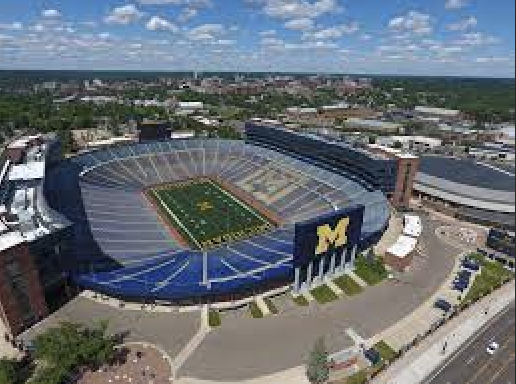
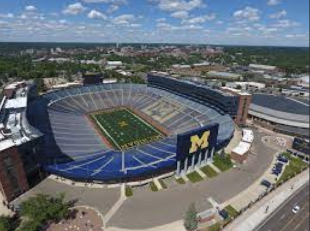
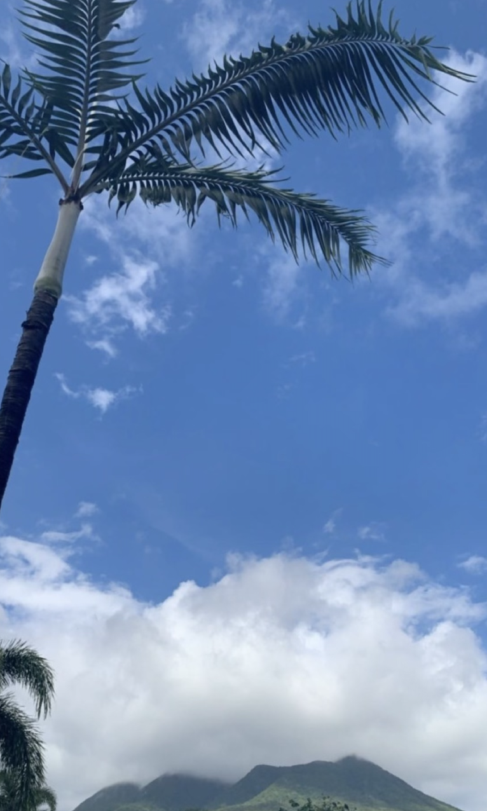
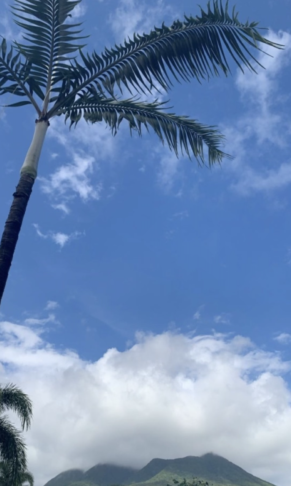

NFTs
 

I am very into the NFT space, especially from a design persepective. I am currently working with a group of Michigan students on an NFT collection project that makes michigan themed NFTs. Each sale will have a special prize for the buyer. We are planning on dropping the collection in February!
Music

I am currently a part time DJ that does events bars, weddings, and other social events. I began DJing this past year and I have been enthralled ever since. My first introduction to music was in elementary school when I started playing the saxaphone and did so up until senior year of high school. Listen to one of the songs I created below!
Photography

 


During my travels I often take landscape photos. I recently just bought a new Nikon DSLR Camera!